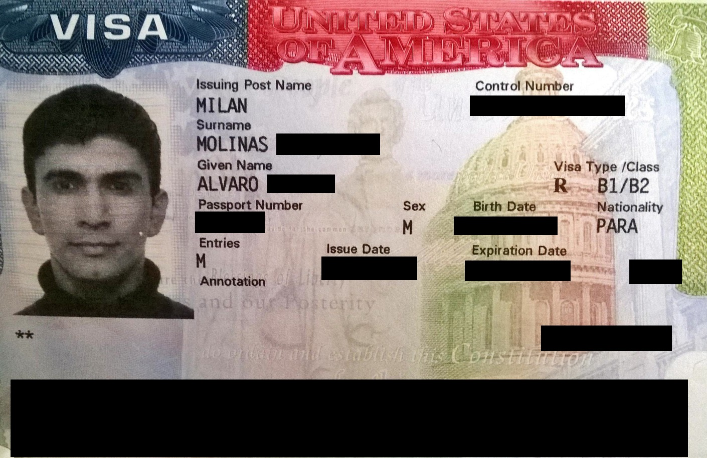

AQSh mehmon vizasi (B-1/B-2): turistik va biznes tashrif qanday rasmiylashtiriladi
Oʻzbekiston fuqarosi AQShga sayohat, qarindosh koʻrish yoki biznes uchun borishda B-1/B-2 vizasiga muhtoj — chunki Oʻzbekiston vizasiz dastur (Visa Waiver / ESTA)ga kirmaydi. Mana DS-160 arizasi, 185 dollarlik yigʻim, suhbat va qancha qolish mumkinligi haqida amaliy maʼlumotnoma.

AQShga vaqtincha — sayohat, davolanish, qarindosh yoki doʻst koʻrish, konferensiya yoki biznes uchrashuvi uchun — boradigan chet el fuqarolarining aksariyati nomuhojir (nonimmigrant) mehmon vizasiga ega boʻlishi kerak. Bu viza ikki toifaga boʻlinadi: B-1 — biznes (muzokara, shartnoma, konferensiya) uchun, B-2 — turizm, davolanish va oilaviy tashrif uchun. Amalda konsullik koʻpincha ikkalasini birga, B-1/B-2 koʻrinishida beradi (Manba: U.S. Department of State — Visitor Visa; USEmbassy.gov — B-1 Visa).
Oʻzbekiston nega vizasiz dasturga kirmaydi
AQShning Visa Waiver Program (VWP) dasturi — bu ayrim davlatlar fuqarolariga vizasiz, faqat ESTA ruxsatnomasi bilan 90 kungacha kirish imkonini beradigan tizim. Oʻzbekiston bu dasturning ishtirokchisi emas; shuning uchun oʻzbekistonlik fuqaro ESTA orqali emas, balki toʻliq viza jarayoni orqali — AQSh elchixonasi yoki konsulligida — B-1/B-2 vizasini olishi shart. ESTA faqat VWP aʼzosi boʻlgan davlatlar uchun amal qiladi (Manba: U.S. Department of State — Visa Waiver Program).
DS-160 — onlayn ariza
Jarayon DS-160 onlayn anketasini toʻldirishdan boshlanadi. Bu barcha nomuhojir vizalar uchun yagona elektron ariza boʻlib, unda shaxsiy maʼlumotlar, sayohat maqsadi, ish va oila haqidagi savollar boʻladi. Anketa toʻldirilib yuborilgach, tizim shtrix-kodli tasdiqlash sahifasini (confirmation page) chiqaradi — uni chop etib, suhbatga olib borish shart. DS-160dagi maʼlumot suhbatda beriladigan javoblarga mos boʻlishi kerak (Manba: U.S. Department of State — DS-160; Travel.State.Gov).

Yigʻim: 185 dollar (MRV)
B-1/B-2 vizasi uchun asosiy davlat yigʻimi — MRV (mashina orqali oʻqiladigan viza yigʻimi) — 185 AQSh dollarini tashkil etadi. Bu toʻlov qaytarilmaydi va boshqa shaxsga oʻtkazilmaydi; u suhbatga yozilishdan oldin toʻlanadi. Yigʻimni toʻlash viza berilishini kafolatlamaydi — u faqat ariza koʻrib chiqilishi uchun olinadi (Manba: U.S. Department of State — Fees for Visa Services; USEmbassy.gov).
Suhbat va qaror
Aksariyat arizachilar AQSh elchixonasi yoki konsulligida konsul xodimi bilan suhbatdan oʻtadi. Qonunchilikka koʻra (Immigration and Nationality Act, 214(b)-moddasi), har bir B-vizasi arizachisi dastlab potensial muhojir deb hisoblanadi; viza olish uchun u vaqtincha borishini va oʻz vataniga qaytish niyati borligini — masalan, ish, oila, mol-mulk kabi mustahkam aloqalar orqali — konsulga ishontirishi kerak. Konsul xodimi barmoq izlarini oladi va shu yerda qaror chiqaradi (Manba: U.S. Department of State — Visitor Visa; INA §214(b)).
Viza amal qilish muddati va qancha qolish mumkinligi
Muhim farqni ajratish kerak: vizaning amal qilish muddati bilan AQShda qolish muddati — bu ikki boshqa narsa. Vizaning amal qilish muddati va kirishlar soni har bir davlat uchun Davlat departamentining «reciprocity schedule» (oʻzaro jadval) hujjati bilan belgilanadi; oʻzbekistonlik fuqaroga tegishli aniq muddatni shu rasmiy jadvaldan tekshirish kerak. Vizaning amal qilishi — bu faqat chegaraga kelish imkoniyati oynasi, qolish huquqini bermaydi (Manba: U.S. Department of State — Visa Reciprocity by Country).
AQShda qancha qolish mumkinligini esa viza emas, chegaradagi Bojxona va chegara xizmati (CBP) xodimi belgilaydi va buni elektron I-94 yozuviga kiritadi. B-2 mehmon vizasi boʻyicha odatda koʻpi bilan 6 oygacha qolishga ruxsat beriladi. Haqiqiy ruxsat etilgan sana aynan I-94da koʻrsatiladi — shuning uchun kirgandan soʻng I-94 yozuvini (i94.cbp.dhs.gov saytidan) tekshirib olish tavsiya etiladi. Belgilangan sanadan oshib qolish (overstay) keyingi vizalarga va kirishga jiddiy taʼsir qiladi (Manba: U.S. CBP — I-94; U.S. Department of State).
B-vizasi bilan nima qilib boʻlmaydi
B-1/B-2 vizasi ishlash yoki doimiy oʻqish uchun emas. Uning bilan AQShda ish haqi olib ishlash, bandlik topish yoki toʻliq kunlik oʻquv dasturiga qatnashish taqiqlanadi — ish uchun alohida mehnat vizasi (masalan, H toifasi), oʻqish uchun esa talaba vizasi (F-1) kerak. B-1 biznes tashrifi doirasida muzokara, uchrashuv va konferensiyada qatnashish mumkin, lekin AQShdagi ish beruvchidan maosh olish mumkin emas (Manba: U.S. Department of State — Visitor Visa; USCIS).
Rad etilsa yoki 221(g) boʻlsa
Agar konsul 214(b) asosida rad etsa, bu umrbod taqiq emas: arizachi keyinchalik vaziyat oʻzgarganida (yangi ish, oila, mol-mulk kabi kuchliroq aloqalar bilan) qayta ariza bera oladi, biroq MRV yigʻimi har gal qaytadan toʻlanadi. 221(g) holati esa — qaror qoʻshimcha hujjat yoki tekshiruv kutilayotgani sababli vaqtincha kechiktirilganini bildiradi. Har qanday holatda ham rasmiy maʼlumot faqat AQSh elchixonasi va travel.state.gov orqali olinishi kerak; vositachi yoki «kafolatli viza» vaʼda qiluvchilarga ishonmaslik lozim (Manba: U.S. Department of State — Administrative Processing; INA §221(g)).

Manbalar
- U.S. Department of State — Visitor Visa (B-1/B-2)
- U.S. Department of State — Visa Waiver Program
- U.S. Department of State — Fees for Visa Services (MRV $185)
- U.S. Department of State — DS-160 Online Nonimmigrant Visa Application
- U.S. CBP — I-94 Official Website
- U.S. Department of State — Visa Reciprocity by Country (Uzbekistan)